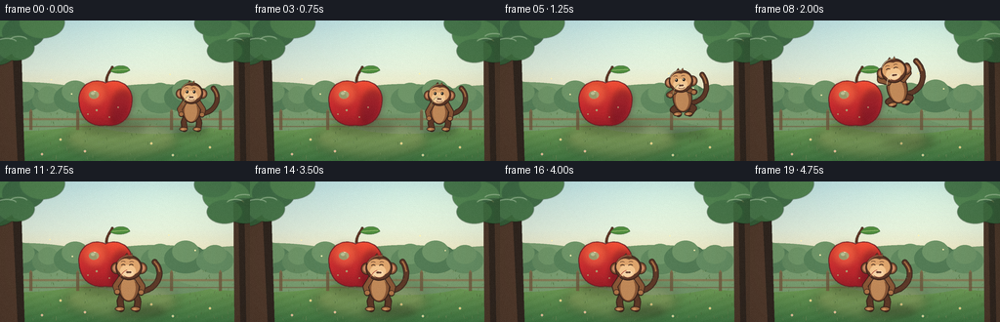
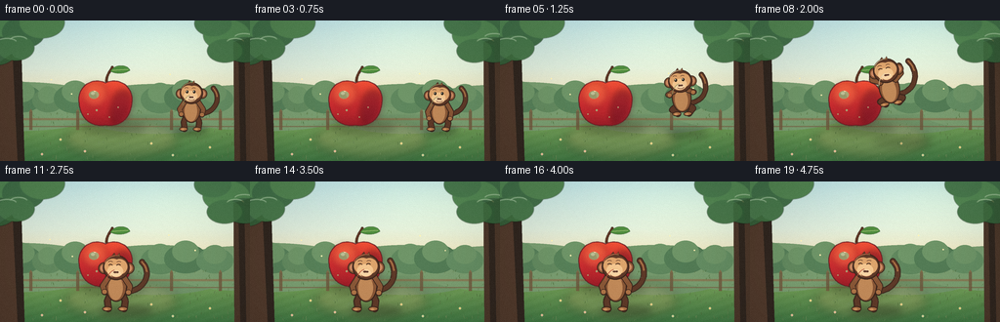
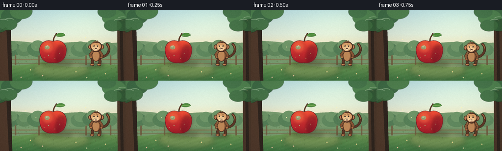

CODING AGENTS AS PIXEL WORLD MODELS
traex/DeepSeek-V4.1-Flash · dynamic_spatial_relationship_0059
点击播放 · 原生 RGB 像素
逐轮保存的候选
回放视频、检查图与代码变化。
每份候选均可单独播放。实际图片检查记录在下方工具轨迹中。
候选 01播放与检查图
点击播放 · 原生 RGB 像素

展开代码变化
--- 上一保存版本
+++ 本次保存版本
@@ -0,0 +1,705 @@
+from __future__ import annotations
+
+import math
+from pathlib import Path
+
+import numpy as np
+from PIL import Image, ImageChops, ImageDraw, ImageFilter
+
+import artifact_io
+
+
+ROOT = Path(__file__).resolve().parent
+W, H = 256, 144
+FRAMES = 20
+FPS = 4
+S = 4
+IW, IH = W * S, H * S
+
+
+def srgb(hex_color: str) -> tuple[int, int, int]:
+ value = hex_color.lstrip("#")
+ return tuple(int(value[i : i + 2], 16) for i in (0, 2, 4))
+
+
+def mix(a, b, t):
+ return tuple(int(round(x + (y - x) * t)) for x, y in zip(a, b))
+
+
+def ease(t: float) -> float:
+ t = max(0.0, min(1.0, t))
+ return t * t * (3.0 - 2.0 * t)
+
+
+def smoothstep(edge0: float, edge1: float, x: float) -> float:
+ if edge0 == edge1:
+ return float(x >= edge1)
+ t = max(0.0, min(1.0, (x - edge0) / (edge1 - edge0)))
+ return t * t * (3.0 - 2.0 * t)
+
+
+def bezier(points, steps=28):
+ pts = np.asarray(points, dtype=np.float64)
+ out = []
+ for i in range(steps + 1):
+ t = i / steps
+ u = 1.0 - t
+ out.append(
+ u**3 * pts[0]
+ + 3.0 * u * u * t * pts[1]
+ + 3.0 * u * t * t * pts[2]
+ + t**3 * pts[3]
+ )
+ return [tuple(p) for p in out]
+
+
+def rounded_line(draw, points, fill, width, outline=None):
+ width = max(1, int(round(width)))
+ if outline is not None:
+ out_width = width + max(2, int(round(width * 0.38)))
+ draw.line(points, fill=outline, width=out_width, joint="curve")
+ r = out_width / 2
+ for x, y in (points[0], points[-1]):
+ draw.ellipse((x - r, y - r, x + r, y + r), fill=outline)
+ draw.line(points, fill=fill, width=width, joint="curve")
+ r = width / 2
+ for x, y in (points[0], points[-1]):
+ draw.ellipse((x - r, y - r, x + r, y + r), fill=fill)
+
+
+def vertical_gradient(size, stops):
+ width, height = size
+ arr = np.zeros((height, width, 3), dtype=np.float32)
+ for y in range(height):
+ t = y / max(1, height - 1)
+ for i in range(len(stops) - 1):
+ p0, c0 = stops[i]
+ p1, c1 = stops[i + 1]
+ if p0 <= t <= p1 or i == len(stops) - 2:
+ local = max(0.0, min(1.0, (t - p0) / max(1e-6, p1 - p0)))
+ arr[y, :, :] = np.asarray(mix(c0, c1, local), dtype=np.float32)
+ break
+ return arr
+
+
+def make_background(frame_index: int) -> Image.Image:
+ horizon = 88 * S
+ sky = vertical_gradient(
+ (IW, horizon),
+ [
+ (0.0, srgb("#b8dce1")),
+ (0.55, srgb("#d9e7d8")),
+ (1.0, srgb("#f4dfb2")),
+ ],
+ )
+ ground = vertical_gradient(
+ (IW, IH - horizon),
+ [
+ (0.0, srgb("#83a85f")),
+ (0.35, srgb("#6f9b56")),
+ (1.0, srgb("#3e7442")),
+ ],
+ )
+ arr = np.zeros((IH, IW, 3), dtype=np.float32)
+ arr[:horizon] = sky
+ arr[horizon:] = ground
+
+ yy, xx = np.mgrid[0:IH, 0:IW]
+ nx = xx / IW
+ ny = yy / IH
+ light = np.exp(-(((nx - 0.77) ** 2) / 0.16 + ((ny - 0.12) ** 2) / 0.08))
+ arr += light[:, :, None] * np.asarray((20, 18, 5), dtype=np.float32)
+
+ # Soft mowing bands make the ground readable without adding visual noise.
+ band = np.sin((xx * 0.020 + yy * 0.060) * math.pi) * 2.1
+ ground_mask = (yy >= horizon).astype(np.float32)
+ arr += (band[:, :, None] * ground_mask[:, :, None])
+ base = Image.fromarray(np.clip(arr, 0, 255).astype(np.uint8), "RGB")
+ draw = ImageDraw.Draw(base, "RGBA")
+
+ # Hazy orchard hills.
+ draw.ellipse((-70 * S, 63 * S, 112 * S, 113 * S), fill=srgb("#779b70"))
+ draw.ellipse((74 * S, 65 * S, 244 * S, 116 * S), fill=srgb("#6f9369"))
+ draw.ellipse((170 * S, 66 * S, 330 * S, 112 * S), fill=srgb("#789b70"))
+ draw.rectangle((0, 89 * S, IW, 96 * S), fill=(*srgb("#789b70"), 120))
+
+ # Distant tree crowns, kept low contrast behind the actors.
+ crowns = [
+ (23, 80, 20, 14, "#547d58"),
+ (49, 82, 16, 12, "#60875e"),
+ (77, 80, 22, 15, "#557f58"),
+ (164, 81, 20, 14, "#5d855d"),
+ (190, 79, 22, 15, "#517a55"),
+ (220, 81, 19, 13, "#628b62"),
+ ]
+ for cx, cy, rx, ry, color in crowns:
+ draw.ellipse(
+ ((cx - rx) * S, (cy - ry) * S, (cx + rx) * S, (cy + ry) * S),
+ fill=srgb(color),
+ )
+ draw.ellipse(
+ ((cx - rx * 0.62) * S, (cy - ry * 1.22) * S, (cx + rx * 0.62) * S, (cy + ry * 0.25) * S),
+ fill=srgb("#6c9367"),
+ )
+
+ # Fence and its shadow sit in the distant middle ground.
+ fence = (96, 105)
+ draw.rectangle((0, 100 * S, IW, 102 * S), fill=(*srgb("#876f4d"), 180))
+ draw.rectangle((0, 108 * S, IW, 109 * S), fill=(*srgb("#765f43"), 165))
+ for x in (30, 78, 174, 224):
+ draw.rectangle((x * S, 93 * S, (x + 3) * S, 112 * S), fill=(*srgb("#6e583e"), 210))
+ draw.polygon(
+ [
+ (x * S, 93 * S),
+ ((x + 1.5) * S, 90.5 * S),
+ ((x + 3) * S, 93 * S),
+ ],
+ fill=(*srgb("#806646"), 210),
+ )
+
+ # A warm dirt clearing beneath the apple and the landing area.
+ clearing = Image.new("RGBA", (IW, IH), (0, 0, 0, 0))
+ cd = ImageDraw.Draw(clearing, "RGBA")
+ cd.ellipse((65 * S, 102 * S, 183 * S, 141 * S), fill=(*srgb("#b89a65"), 74))
+ cd.ellipse((79 * S, 107 * S, 168 * S, 135 * S), fill=(*srgb("#c6a970"), 52))
+ clearing = clearing.filter(ImageFilter.GaussianBlur(5.5 * S))
+ base = Image.alpha_composite(base.convert("RGBA"), clearing)
+ draw = ImageDraw.Draw(base, "RGBA")
+
+ # Grass texture and tiny flowers.
+ rng = np.random.default_rng(17)
+ for _ in range(170):
+ x = float(rng.uniform(2, 254))
+ y = float(rng.uniform(91, 143))
+ length = rng.uniform(1.0, 3.2) * (0.65 + (y - 88) / 80)
+ lean = rng.uniform(-0.8, 0.8)
+ shade = int(rng.uniform(72, 112))
+ alpha = int(rng.uniform(70, 145))
+ draw.line(
+ (x * S, y * S, (x + lean) * S, (y - length) * S),
+ fill=(shade, shade + 31, shade - 18, alpha),
+ width=max(1, int(0.7 * S)),
+ )
+ for x, y, color in [
+ (62, 122, "#f4e3a4"),
+ (87, 134, "#f0c9b8"),
+ (155, 126, "#f4e3a4"),
+ (177, 138, "#d7e3ba"),
+ (43, 137, "#f0c9b8"),
+ (215, 130, "#f4e3a4"),
+ ]:
+ draw.ellipse(
+ ((x - 1.1) * S, (y - 1.1) * S, (x + 1.1) * S, (y + 1.1) * S),
+ fill=srgb(color),
+ )
+ draw.ellipse(
+ ((x - 0.35) * S, (y - 0.35) * S, (x + 0.35) * S, (y + 0.35) * S),
+ fill=srgb("#d4a83d"),
+ )
+
+ # Foreground trunks and canopy frame the clearing.
+ draw.polygon(
+ [(0, 42 * S), (12 * S, 34 * S), (22 * S, 49 * S), (25 * S, 144 * S), (0, 144 * S)],
+ fill=srgb("#4f392c"),
+ )
+ draw.polygon(
+ [(13 * S, 37 * S), (22 * S, 40 * S), (25 * S, 144 * S), (18 * S, 144 * S)],
+ fill=(*srgb("#2e251f"), 115),
+ )
+ draw.polygon(
+ [(239 * S, 22 * S), (256 * S, 17 * S), (256 * S, 144 * S), (240 * S, 144 * S)],
+ fill=srgb("#49362a"),
+ )
+ draw.polygon(
+ [(244 * S, 24 * S), (250 * S, 25 * S), (252 * S, 144 * S), (246 * S, 144 * S)],
+ fill=(*srgb("#2e251f"), 100),
+ )
+
+ canopy = Image.new("RGBA", (IW, IH), (0, 0, 0, 0))
+ cdraw = ImageDraw.Draw(canopy, "RGBA")
+ sway = math.sin(frame_index * 0.62) * 0.8 * S
+ left_leaves = [
+ (-15, 14, 30, 20, "#3d6f42"),
+ (4, 3, 28, 19, "#477d48"),
+ (24, 12, 22, 16, "#35643c"),
+ (43, 2, 23, 16, "#477a46"),
+ (-5, 31, 22, 15, "#315c38"),
+ (16, 28, 19, 13, "#3c6d40"),
+ ]
+ for i, (cx, cy, rx, ry, color) in enumerate(left_leaves):
+ dx = sway * (1.0 if i % 2 else 0.45)
+ cdraw.ellipse(
+ ((cx - rx) * S + dx, (cy - ry) * S, (cx + rx) * S + dx, (cy + ry) * S),
+ fill=(*srgb(color), 238),
+ )
+ right_leaves = [
+ (247, 5, 28, 17, "#35643c"),
+ (232, 15, 24, 16, "#477d48"),
+ (218, 3, 19, 13, "#3d6f42"),
+ (251, 30, 21, 13, "#315c38"),
+ (230, 31, 18, 12, "#3c6d40"),
+ ]
+ for i, (cx, cy, rx, ry, color) in enumerate(right_leaves):
+ dx = -sway * (1.0 if i % 2 else 0.55)
+ cdraw.ellipse(
+ ((cx - rx) * S + dx, (cy - ry) * S, (cx + rx) * S + dx, (cy + ry) * S),
+ fill=(*srgb(color), 238),
+ )
+ for cx, cy, rx, ry in [(7, 22, 10, 4), (19, 20, 9, 4), (241, 22, 9, 4), (250, 17, 10, 4)]:
+ cdraw.arc(
+ ((cx - rx) * S, (cy - ry) * S, (cx + rx) * S, (cy + ry) * S),
+ 195,
+ 345,
+ fill=(*srgb("#7ca267"), 135),
+ width=max(1, int(0.8 * S)),
+ )
+ canopy = canopy.filter(ImageFilter.GaussianBlur(0.35 * S))
+ base = Image.alpha_composite(base, canopy)
+
+ # Subtle airborne pollen catches the warm light.
+ draw = ImageDraw.Draw(base, "RGBA")
+ for i, (x, y, phase) in enumerate([(52, 60, 0.5), (173, 55, 1.2), (199, 70, 2.1), (73, 76, 2.8)]):
+ ox = math.sin(frame_index * 0.45 + phase) * 1.2
+ oy = math.cos(frame_index * 0.32 + phase) * 0.8
+ draw.ellipse(
+ ((x + ox - 0.7) * S, (y + oy - 0.7) * S, (x + ox + 0.7) * S, (y + oy + 0.7) * S),
+ fill=(255, 241, 180, 115),
+ )
+ return base.convert("RGB")
+
+
+def draw_soft_shadow(scene: Image.Image, center, radii, color=(30, 48, 26, 90), blur=4.0):
+ layer = Image.new("RGBA", (IW, IH), (0, 0, 0, 0))
+ draw = ImageDraw.Draw(layer, "RGBA")
+ cx, cy = center
+ rx, ry = radii
+ draw.ellipse(
+ ((cx - rx) * S, (cy - ry) * S, (cx + rx) * S, (cy + ry) * S),
+ fill=color,
+ )
+ layer = layer.filter(ImageFilter.GaussianBlur(blur * S))
+ return Image.alpha_composite(scene.convert("RGBA"), layer)
+
+
+def apple_mask_points(cx: float, cy: float):
+ top = cy - 25
+ bottom = cy + 25
+ pts = []
+ pts += bezier(
+ [
+ (cx, top + 5),
+ (cx - 17, top - 2),
+ (cx - 30, top + 12),
+ (cx - 27, cy + 1),
+ ],
+ 34,
+ )
+ pts += bezier(
+ [
+ (cx - 27, cy + 1),
+ (cx - 25, cy + 20),
+ (cx - 11, bottom),
+ (cx, bottom - 2),
+ ],
+ 34,
+ )
+ pts += bezier(
+ [
+ (cx, bottom - 2),
+ (cx + 11, bottom),
+ (cx + 25, cy + 20),
+ (cx + 27, cy + 1),
+ ],
+ 34,
+ )
+ pts += bezier(
+ [
+ (cx + 27, cy + 1),
+ (cx + 30, top + 12),
+ (cx + 17, top - 2),
+ (cx, top + 5),
+ ],
+ 34,
+ )
+ return [(x * S, y * S) for x, y in pts]
+
+
+def draw_apple(scene: Image.Image, cx: float, cy: float) -> Image.Image:
+ scene = draw_soft_shadow(scene, (cx + 8, cy + 26), (33, 6.5), (35, 48, 25, 85), 4.0)
+ layer = Image.new("RGBA", (IW, IH), (0, 0, 0, 0))
+ draw = ImageDraw.Draw(layer, "RGBA")
+ points = apple_mask_points(cx, cy)
+
+ mask = Image.new("L", (IW, IH), 0)
+ ImageDraw.Draw(mask).polygon(points, fill=255)
+ bbox = mask.getbbox()
+ if bbox is None:
+ return scene
+ x0, y0, x1, y1 = bbox
+ yy = np.arange(IH, dtype=np.float32)[:, None, None]
+ t = np.clip((yy - (cy - 25) * S) / (50 * S), 0, 1)
+ top_color = np.asarray((239, 82, 54), dtype=np.float32)
+ mid_color = np.asarray((205, 45, 49), dtype=np.float32)
+ low_color = np.asarray((145, 26, 38), dtype=np.float32)
+ gradient = np.where(t < 0.52, top_color + (mid_color - top_color) * (t / 0.52), mid_color + (low_color - mid_color) * ((t - 0.52) / 0.48))
+ gradient = np.repeat(gradient, IW, axis=1)
+ fill = Image.fromarray(np.clip(gradient, 0, 255).astype(np.uint8), "RGB").convert("RGBA")
+ fill.putalpha(mask)
+ layer = Image.alpha_composite(layer, fill)
+
+ # Painted volume: warm upper-left light, cool lower-right shade.
+ shade = Image.new("RGBA", (IW, IH), (0, 0, 0, 0))
+ sd = ImageDraw.Draw(shade, "RGBA")
+ sd.ellipse(
+ ((cx + 5) * S, (cy - 13) * S, (cx + 31) * S, (cy + 27) * S),
+ fill=(89, 15, 32, 120),
+ )
+ sd.ellipse(
+ ((cx - 24) * S, (cy - 21) * S, (cx + 2) * S, (cy + 5) * S),
+ fill=(255, 161, 91, 60),
+ )
+ shade.putalpha(ImageChops.multiply(shade.getchannel("A"), mask))
+ shade = shade.filter(ImageFilter.GaussianBlur(3.2 * S))
+ layer = Image.alpha_composite(layer, shade)
+
+ draw = ImageDraw.Draw(layer, "RGBA")
+ draw.line(points + [points[0]], fill=(112, 24, 33, 240), width=max(1, int(1.15 * S)), joint="curve")
+
+ # Stem, leaf and two restrained highlights.
+ stem = bezier(
+ [(cx + 1, cy - 22), (cx + 1.5, cy - 30), (cx + 6, cy - 33), (cx + 7, cy - 36)],
+ 16,
+ )
+ rounded_line(
+ draw,
+ [(x * S, y * S) for x, y in stem],
+ srgb("#5b3423"),
+ int(2.1 * S),
+ srgb("#3e261c"),
+ )
+ leaf = bezier(
+ [(cx + 5, cy - 32), (cx + 10, cy - 40), (cx + 23, cy - 39), (cx + 25, cy - 33)],
+ 22,
+ )
+ leaf += bezier(
+ [(cx + 25, cy - 33), (cx + 20, cy - 29), (cx + 10, cy - 29), (cx + 5, cy - 32)],
+ 22,
+ )
+ draw.polygon([(x * S, y * S) for x, y in leaf], fill=srgb("#4d8a3e"), outline=srgb("#2f612e"))
+ draw.line(
+ ((cx + 7) * S, (cy - 33) * S, (cx + 23) * S, (cy - 34) * S),
+ fill=(*srgb("#9bbf60"), 200),
+ width=max(1, int(0.8 * S)),
+ )
+ draw.ellipse(
+ ((cx - 17) * S, (cy - 12) * S, (cx - 7) * S, (cy - 4) * S),
+ fill=(255, 190, 137, 95),
+ )
+ draw.ellipse(
+ ((cx - 15) * S, (cy - 11) * S, (cx - 11) * S, (cy - 8) * S),
+ fill=(255, 229, 191, 150),
+ )
+ for sx, sy, r in [(-9, 8, 0.8), (4, 15, 0.6), (13, 5, 0.7), (-18, 12, 0.55)]:
+ draw.ellipse(
+ ((cx + sx - r) * S, (cy + sy - r) * S, (cx + sx + r) * S, (cy + sy + r) * S),
+ fill=(255, 196, 136, 80),
+ )
+ layer = layer.filter(ImageFilter.GaussianBlur(0.18 * S))
+ return Image.alpha_composite(scene.convert("RGBA"), layer)
+
+
+def draw_monkey(
+ scene: Image.Image,
+ anchor_x: float,
+ anchor_y: float,
+ scale: float,
+ angle: float,
+ air: float,
+ crouch: float,
+ tail_phase: float,
+ expression: str = "neutral",
+) -> Image.Image:
+ # Draw at high resolution in a local rig, then transform around the feet.
+ lw, lh = 120, 132
+ anchor = (60 * S, 120 * S)
+ local = Image.new("RGBA", (lw * S, lh * S), (0, 0, 0, 0))
+ d = ImageDraw.Draw(local, "RGBA")
+
+ def p(x, y):
+ return ((60 + x) * S, (120 + y) * S)
+
+ def box(cx, cy, rx, ry):
+ return (
+ (60 + cx - rx) * S,
+ (120 + cy - ry) * S,
+ (60 + cx + rx) * S,
+ (120 + cy + ry) * S,
+ )
+
+ outline = srgb("#3a251d")
+ fur_dark = srgb("#5b3828")
+ fur = srgb("#855536")
+ fur_light = srgb("#aa7146")
+ face = srgb("#d9a16b")
+ face_light = srgb("#efc38e")
+ inner_ear = srgb("#c78662")
+ belly = srgb("#bd8758")
+
+ body_y = -22 + crouch * 3.2 - air * 2.0
+ head_y = -38 + crouch * 3.8 - air * 2.2
+ lean = 0.0
+
+ # Tail behind the body.
+ sway = math.sin(tail_phase) * 3.0
+ tail = bezier(
+ [
+ (7, -17 + crouch * 2),
+ (23, -16 + sway * 0.35),
+ (31 + sway, -32),
+ (22 + sway * 0.35, -43 - air * 2),
+ ],
+ 30,
+ )
+ rounded_line(
+ d,
+ [p(x, y) for x, y in tail],
+ fur_dark,
+ 3.7 * S,
+ outline,
+ )
+ rounded_line(
+ d,
+ [p(x, y) for x, y in tail[-8:]],
+ fur_light,
+ 1.2 * S,
+ )
+
+ # Legs and feet.
+ hip_l = (-5.2, -15.5 + crouch * 2.5)
+ hip_r = (5.2, -15.5 + crouch * 2.5)
+ if air > 0.25:
+ knee_l = (-10.5, -10.5 - air * 2.5)
+ knee_r = (10.5, -10.5 - air * 2.5)
+ foot_l = (-4.2 - air * 1.8, -5.2 - air * 5.0)
+ foot_r = (5.4 + air * 1.2, -4.2 - air * 5.8)
+ else:
+ knee_l = (-8.0 - crouch * 2.5, -8.3 + crouch * 1.5)
+ knee_r = (8.0 + crouch * 2.5, -8.3 + crouch * 1.5)
+ foot_l = (-7.0 - crouch * 1.5, -1.4)
+ foot_r = (7.0 + crouch * 1.5, -1.4)
+ for hip, knee, foot in [(hip_l, knee_l, foot_l), (hip_r, knee_r, foot_r)]:
+ rounded_line(d, [p(*hip), p(*knee), p(*foot)], fur_dark, 4.4 * S, outline)
+ fx, fy = foot
+ d.ellipse(box(fx - 1.2, fy + 0.2, 4.2, 2.1), fill=fur_light, outline=outline, width=max(1, int(0.75 * S)))
+ d.ellipse(box(fx - 2.0, fy + 0.5, 1.5, 0.9), fill=srgb("#c88f5d"))
+
+ # Body.
+ d.ellipse(box(0, body_y, 9.6, 14.4), fill=fur, outline=outline, width=max(1, int(1.05 * S)))
+ d.ellipse(box(-0.5, body_y + 2.2, 6.4, 10.6), fill=belly)
+ d.arc(box(-1.0, body_y + 1.0, 7.4, 11.0), 205, 335, fill=(*srgb("#d5a273"), 150), width=max(1, int(0.7 * S)))
+
+ # Arms respond to anticipation, flight and landing.
+ shoulder_l = (-7.2, -29 + crouch * 2.7 - air * 1.5)
+ shoulder_r = (7.2, -29 + crouch * 2.7 - air * 1.5)
+ idle_l = (-10.5, -16.5)
+ idle_r = (10.8, -16.0)
+ crouch_l = (-10.8, -7.8)
+ crouch_r = (11.0, -7.5)
+ air_l = (-13.0, -38.0 - air * 2.0)
+ air_r = (12.8, -41.5 - air * 1.5)
+ blend_l = (
+ idle_l[0] * (1 - air) * (1 - crouch) + crouch_l[0] * crouch * (1 - air) + air_l[0] * air,
+ idle_l[1] * (1 - air) * (1 - crouch) + crouch_l[1] * crouch * (1 - air) + air_l[1] * air,
+ )
+ blend_r = (
+ idle_r[0] * (1 - air) * (1 - crouch) + crouch_r[0] * crouch * (1 - air) + air_r[0] * air,
+ idle_r[1] * (1 - air) * (1 - crouch) + crouch_r[1] * crouch * (1 - air) + air_r[1] * air,
+ )
+ elbow_l = (shoulder_l[0] - 5.0 - air * 2.0, (shoulder_l[1] + blend_l[1]) / 2 + 1.2)
+ elbow_r = (shoulder_r[0] + 5.0 + air * 1.0, (shoulder_r[1] + blend_r[1]) / 2 + 1.0)
+ for shoulder, elbow, hand in [(shoulder_l, elbow_l, blend_l), (shoulder_r, elbow_r, blend_r)]:
+ rounded_line(d, [p(*shoulder), p(*elbow), p(*hand)], fur, 4.0 * S, outline)
+ d.ellipse(box(hand[0], hand[1], 2.5, 2.4), fill=fur_light, outline=outline, width=max(1, int(0.7 * S)))
+
+ # Ears.
+ ear_y = head_y + 0.5
+ for ex, flip in [(-11.0, -1), (11.0, 1)]:
+ d.ellipse(box(ex, ear_y, 5.0, 5.2), fill=fur, outline=outline, width=max(1, int(0.9 * S)))
+ d.ellipse(box(ex + flip * 0.25, ear_y, 2.8, 3.1), fill=inner_ear)
+
+ # Head, cream face mask and muzzle.
+ d.ellipse(box(0, head_y, 11.8, 11.2), fill=fur_dark, outline=outline, width=max(1, int(1.05 * S)))
+ d.ellipse(box(-2.9, head_y - 1.0, 7.4, 7.0), fill=face)
+ d.ellipse(box(3.0, head_y - 0.8, 6.9, 6.8), fill=face)
+ d.ellipse(box(-0.8, head_y + 3.0, 7.0, 5.5), fill=face_light)
+ d.ellipse(box(-0.5, head_y + 5.0, 4.6, 2.6), fill=srgb("#f3d2a5"))
+
+ # A small forehead tuft.
+ d.polygon(
+ [p(-4.5, head_y - 10.2), p(-1.7, head_y - 13.1), p(-0.4, head_y - 9.9)],
+ fill=fur_dark,
+ outline=outline,
+ )
+ d.polygon(
+ [p(0.3, head_y - 10.1), p(2.8, head_y - 13.0), p(3.4, head_y - 9.8)],
+ fill=fur,
+ outline=outline,
+ )
+
+ # Eyes and brows.
+ eye_y = head_y - 1.4
+ if expression == "happy":
+ d.arc(box(-5.0, eye_y, 2.2, 1.7), 205, 335, fill=outline, width=max(1, int(0.85 * S)))
+ d.arc(box(2.1, eye_y, 2.2, 1.7), 205, 335, fill=outline, width=max(1, int(0.85 * S)))
+ else:
+ for ex in (-4.4, 2.8):
+ d.ellipse(box(ex, eye_y, 1.25, 1.55), fill=srgb("#201b18"))
+ d.ellipse(box(ex - 0.35, eye_y - 0.45, 0.42, 0.45), fill=(255, 248, 220, 230))
+ d.arc(box(-5.2, eye_y - 3.1, 2.3, 1.3), 205, 335, fill=srgb("#5d3828"), width=max(1, int(0.55 * S)))
+ d.arc(box(2.4, eye_y - 3.1, 2.1, 1.2), 205, 335, fill=srgb("#5d3828"), width=max(1, int(0.55 * S)))
+
+ # Nose and mouth.
+ nose_y = head_y + 4.1
+ d.ellipse(box(-1.1, nose_y, 1.35, 0.72), fill=srgb("#5b382c"))
+ d.ellipse(box(1.0, nose_y, 1.15, 0.66), fill=srgb("#5b382c"))
+ if expression == "happy":
+ d.arc(box(0.0, nose_y + 2.0, 4.6, 2.8), 20, 160, fill=srgb("#6a342b"), width=max(1, int(0.65 * S)))
+ else:
+ d.arc(box(0.0, nose_y + 1.0, 3.8, 2.2), 25, 155, fill=srgb("#6a342b"), width=max(1, int(0.55 * S)))
+
+ # Soft warm rim from the orchard light.
+ d.arc(box(0, head_y, 11.5, 11.0), 204, 276, fill=(*srgb("#f0b376"), 135), width=max(1, int(0.7 * S)))
+ d.arc(box(0, body_y, 9.4, 14.1), 195, 260, fill=(*srgb("#d69a64"), 80), width=max(1, int(0.55 * S)))
+
+ local = local.filter(ImageFilter.GaussianBlur(0.12 * S))
+ rotated = local.rotate(angle, resample=Image.Resampling.BICUBIC, center=anchor)
+ if abs(scale - 1.0) > 1e-5:
+ rotated = rotated.resize(
+ (max(1, int(round(rotated.width * scale))), max(1, int(round(rotated.height * scale)))),
+ Image.Resampling.LANCZOS,
+ )
+ ax = anchor[0] * scale
+ ay = anchor[1] * scale
+ px = int(round(anchor_x * S - ax))
+ py = int(round(anchor_y * S - ay))
+ scene_rgba = scene.convert("RGBA")
+ scene_rgba.alpha_composite(rotated, (px, py))
+ return scene_rgba
+
+
+def frame_pose(index: int):
+ # Idle -> anticipation -> airborne arc -> landing -> settle.
+ if index <= 2:
+ jump_t = 0.0
+ crouch = 0.0
+ air = 0.0
+ x, feet_y, scale, angle = 196.0, 112.5, 1.0, 0.0
+ expression = "neutral"
+ elif index == 3:
+ jump_t = 0.0
+ crouch = 0.48
+ air = 0.0
+ x, feet_y, scale, angle = 194.0, 112.5, 1.0, 0.0
+ expression = "neutral"
+ elif index == 4:
+ jump_t = 0.0
+ crouch = 0.90
+ air = 0.0
+ x, feet_y, scale, angle = 192.0, 112.5, 1.01, 0.0
+ expression = "neutral"
+ elif 5 <= index <= 11:
+ jump_t = (index - 4) / 7.0
+ x = 192.0 + (132.0 - 192.0) * ease(jump_t)
+ feet_y = 112.5 + (132.0 - 112.5) * jump_t - 29.0 * math.sin(math.pi * jump_t)
+ scale = 1.01 + 0.14 * jump_t + 0.025 * math.sin(math.pi * jump_t)
+ angle = 11.0 * math.sin(math.pi * jump_t)
+ air = math.sin(math.pi * jump_t)
+ crouch = 0.0
+ expression = "happy" if jump_t > 0.38 else "neutral"
+ elif index == 12:
+ jump_t = 1.0
+ x, feet_y, scale, angle = 132.0, 132.0, 1.15, 0.0
+ air = 0.0
+ crouch = 0.62
+ expression = "happy"
+ elif index == 13:
+ jump_t = 1.0
+ x, feet_y, scale, angle = 132.5, 132.0, 1.15, 0.0
+ air = 0.0
+ crouch = 0.20
+ expression = "happy"
+ else:
+ jump_t = 1.0
+ settle = smoothstep(13, 18, index)
+ x = 132.5 - 1.0 * settle
+ feet_y = 132.0
+ scale = 1.15
+ angle = 0.8 * math.sin((index - 13) * 0.7)
+ air = 0.0
+ crouch = 0.10 * (1.0 - settle)
+ expression = "happy" if index >= 14 else "neutral"
+ return jump_t, x, feet_y, scale, angle, air, crouch, expression
+
+
+def compose_frame(index: int) -> np.ndarray:
+ scene = make_background(index)
+ scene = draw_apple(scene, 108.0, 84.0)
+ jump_t, x, feet_y, scale, angle, air, crouch, expression = frame_pose(index)
+
+ # Shadow follows the monkey across the ground and tightens on landing.
+ shadow_x = 196.0 + (142.0 - 196.0) * ease(jump_t)
+ shadow_y = 113.0 + (132.5 - 113.0) * jump_t
+ height = max(0.0, shadow_y - feet_y)
+ spread = 17.0 + 10.0 * jump_t + height * 0.22
+ shadow_alpha = int(max(45, 104 - height * 1.25))
+ scene = draw_soft_shadow(
+ scene,
+ (shadow_x, shadow_y),
+ (spread, 4.0 + 1.2 * jump_t),
+ (34, 47, 27, shadow_alpha),
+ 3.4 + height * 0.03,
+ )
+
+ tail_phase = index * 0.72 + 0.4
+ if index <= 4:
+ breath = math.sin(index * 1.1) * 0.55
+ feet_y += breath * 0.08
+ scene = draw_monkey(
+ scene,
+ x,
+ feet_y,
+ scale,
+ angle,
+ air,
+ crouch,
+ tail_phase,
+ expression,
+ )
+
+ # Gentle contact glow and color grade.
+ arr = np.asarray(scene.convert("RGB"), dtype=np.float32) / 255.0
+ yy, xx = np.mgrid[0:IH, 0:IW]
+ nx = xx / IW - 0.5
+ ny = yy / IH - 0.5
+ vignette = np.clip(1.0 - 0.20 * (nx * nx * 1.4 + ny * ny * 0.85), 0.78, 1.0)
+ arr *= vignette[:, :, None]
+ arr = np.clip(arr * 1.015 + np.asarray((0.006, 0.003, -0.001)), 0, 1)
+ out = Image.fromarray((arr * 255.0 + 0.5).astype(np.uint8), "RGB")
+ out = out.resize((W, H), Image.Resampling.LANCZOS)
+
+ # Very light deterministic grain avoids a flat vector look after downsampling.
+ rng = np.random.default_rng(900 + index)
+ small = np.asarray(out, dtype=np.float32)
+ grain = rng.normal(0.0, 1.15, (H, W, 1)).astype(np.float32)
+ small = np.clip(small + grain, 0, 255)
+ return small.astype(np.uint8)
+
+
+def main():
+ frames = np.stack([compose_frame(i) for i in range(FRAMES)], axis=0)
+ artifact_io.save(frames, ROOT)
+ print(f"Saved {frames.shape} RGB video to {ROOT}")
+
+
+if __name__ == "__main__":
+ main()
候选 02播放与检查图
点击播放 · 原生 RGB 像素


展开代码变化
--- 上一保存版本
+++ 本次保存版本
@@ -609,7 +609,7 @@
expression = "neutral"
elif 5 <= index <= 11:
jump_t = (index - 4) / 7.0
- x = 192.0 + (132.0 - 192.0) * ease(jump_t)
+ x = 192.0 + (119.0 - 192.0) * ease(jump_t)
feet_y = 112.5 + (132.0 - 112.5) * jump_t - 29.0 * math.sin(math.pi * jump_t)
scale = 1.01 + 0.14 * jump_t + 0.025 * math.sin(math.pi * jump_t)
angle = 11.0 * math.sin(math.pi * jump_t)
@@ -618,22 +618,22 @@
expression = "happy" if jump_t > 0.38 else "neutral"
elif index == 12:
jump_t = 1.0
- x, feet_y, scale, angle = 132.0, 132.0, 1.15, 0.0
+ x, feet_y, scale, angle = 119.0, 132.0, 1.18, 0.0
air = 0.0
crouch = 0.62
expression = "happy"
elif index == 13:
jump_t = 1.0
- x, feet_y, scale, angle = 132.5, 132.0, 1.15, 0.0
+ x, feet_y, scale, angle = 119.5, 132.0, 1.18, 0.0
air = 0.0
crouch = 0.20
expression = "happy"
else:
jump_t = 1.0
settle = smoothstep(13, 18, index)
- x = 132.5 - 1.0 * settle
+ x = 119.5 - 1.0 * settle
feet_y = 132.0
- scale = 1.15
+ scale = 1.18
angle = 0.8 * math.sin((index - 13) * 0.7)
air = 0.0
crouch = 0.10 * (1.0 - settle)
@@ -647,7 +647,7 @@
jump_t, x, feet_y, scale, angle, air, crouch, expression = frame_pose(index)
# Shadow follows the monkey across the ground and tightens on landing.
- shadow_x = 196.0 + (142.0 - 196.0) * ease(jump_t)
+ shadow_x = 196.0 + (129.0 - 196.0) * ease(jump_t)
shadow_y = 113.0 + (132.5 - 113.0) * jump_t
height = max(0.0, shadow_y - feet_y)
spread = 17.0 + 10.0 * jump_t + height * 0.22
可观测工具轨迹
实际执行的命令与返回图片。
命令 1exit 0
/bin/bash -c "sed -n '1,240p' prompt.txt"
命令 2exit 0
/bin/bash -c "sed -n '1,260p' GENERATION_RULES.md"
命令 3exit 0
/bin/bash -c 'cat task_spec.json'
命令 4exit 0
/bin/bash -c "find . -maxdepth 2 -type f -printf '%p %s bytes\\n' | sort | head -200"
命令 5exit 0
/bin/bash -c "sed -n '1,260p' artifact_io.py"
命令 6exit 0
/bin/bash -c "sed -n '1,260p' player_template.html"
命令 7exit 0
/bin/bash -c "python - <<'PY' import importlib.util for m in ['numpy','PIL','cv2','imageio','matplotlib','scipy']: print(m, bool(importlib.util.find_spec(m))) PY"
命令 8exit 0
/bin/bash -c 'python generate.py'
命令 9exit 0
/bin/bash -c 'file frames/00.png frames/09.png frames/19.png inspection.png && identify frames/00.png frames/09.png frames/19.png inspection.png 2>/dev/null || true'
命令 10exit 0
/bin/bash -c 'command -v chafa || command -v viu || command -v jp2 || command -v img2txt || true'
命令 11exit 0
/bin/bash -c "python - <<'PY'
from PIL import Image
import numpy as np
for i in [0,3,4,5,7,9,11,12,14,19]:
a=np.asarray(Image.open(f'frames/{i:02d}.png')).astype(float)
print(i, 'mean', a.mean((0,1)).round(1), 'std', a.std((0,1)).round(1), 'unique', len(np.unique(a.reshape(-1,3),axis=0)))
PY"命令 12exit 0
/bin/bash -c "python - <<'PY'
from PIL import Image
import numpy as np
for idx in [0,7,12,19]:
im=Image.open(f'frames/{idx:02d}.png').convert('RGB').resize((96,40),Image.Resampling.LANCZOS)
a=np.asarray(im)
# ANSI truecolor background cells, two spaces each
for row in a:
print(''.join(f'\\033[48;2;{r};{g};{b}m ' for r,g,b in row)+'\\033[0m')
print(f'FRAME {idx}')
PY"命令 13exit 0
/bin/bash -c "python - <<'PY'
from PIL import Image, ImageOps, ImageFilter
import numpy as np
chars=' .:-=+*#%@'
for idx in [0,4,7,9,12,19]:
im=Image.open(f'frames/{idx:02d}.png').convert('L').resize((96,54),Image.Resampling.LANCZOS)
a=np.asarray(im)
# emphasize edges and contrast locally
lo,hi=np.percentile(a,[5,95]); a=np.clip((a-lo)/(hi-lo),0,1)
print('\\nFRAME',idx)
for row in a[::2]:
print(''.join(chars[min(len(chars)-1,int(v*(len(chars)-1)))] for v in row))
PY"命令 14exit 0
/bin/bash -c 'python generate.py'
命令 15exit 0
/bin/bash -c "python - <<'PY'
from PIL import Image
import numpy as np
for idx in [0,7,12,19]:
a=np.asarray(Image.open(f'frames/{idx:02d}.png')).astype(int)
r,g,b=[a[:,:,i] for i in range(3)]
apple=(r>105)&(r>g*1.55)&(r>b*1.35)&(g<115)
# Brown/orange monkey, excludes trunks via central x range and reasonable y
mon=(r>65)&(r<225)&(g>35)&(g<165)&(b<115)&(r>g*1.15)&(g>b*1.05)
yy,xx=np.mgrid[:a.shape[0],:a.shape[1]]
mon &= (xx>25)&(xx<230)&(yy>45)&(yy<138)
for name,m in [('apple',apple),('monkey',mon)]:
ys,xs=np.where(m)
print(idx,name,'n',len(xs),'bbox', (int(xs.min()),int(ys.min()),int(xs.max()),int(ys.max())) if len(xs) else None)
# selected central area colored labels 2x2 average
print('crop',idx)
colors={'A':apple,'M':mon}
for y in range(50,140,5):
row=''
for x in range(30,225,4):
lab='.'
for c,m in colors.items():
if m[y:min(y+5,144),x:min(x+4,256)].sum()>=4: lab=c
row+=lab
print(row)
print()
PY"命令 16exit 0
/bin/bash -c "python - <<'PY'
from PIL import Image
import numpy as np
# Produce a focused 2x nearest-neighbor crop contact sheet for visual inspection.
frames=[]
for idx in [0,4,7,9,12,15,19]:
im=Image.open(f'frames/{idx:02d}.png').crop((70,40,210,140)).resize((280,200),Image.Resampling.NEAREST)
frames.append((idx,im))
out=Image.new('RGB',(280*len(frames),220),(20,24,28))
from PIL import ImageDraw
d=ImageDraw.Draw(out)
for i,(idx,im) in enumerate(frames):
out.paste(im,(i*280,20));d.text((i*280+5,4),f'frame {idx:02d}',fill='white')
out.save('.tmp/focus.png')
print(out.size)
PY"命令 17exit 0
/bin/bash -c "python - <<'PY'
from PIL import Image
import numpy as np
for idx in [0,4,7,9,12,15,19]:
im=Image.open(f'frames/{idx:02d}.png').crop((70,40,210,140)).convert('L').resize((56,30),Image.Resampling.LANCZOS)
a=np.asarray(im); lo,hi=np.percentile(a,[8,92]); a=np.clip((a-lo)/(hi-lo),0,1)
chars=' .:-=+*#%@'
print('\\n',idx)
for row in a:
print(''.join(chars[int(v*(len(chars)-1))] for v in row))
PY"命令 18exit 1
/bin/bash -c "python - <<'PY'
from pathlib import Path
from PIL import Image
import numpy as np
root=Path('.')
spec=np.load(root/'pixels.npz')['pixels']
print('pixels',spec.shape,spec.dtype,'packed-minmax',int(spec.min()),int(spec.max()))
files=sorted((root/'frames').glob('*.png'))
print('frames',len(files))
arr=[]
for p in files:
im=Image.open(p)
assert im.size==(256,144) and im.mode=='RGB', (p,im.size,im.mode)
arr.append(np.asarray(im))
arr=np.stack(arr)
d=np.abs(np.diff(arr.astype(np.int16),axis=0))
print('frame mean abs delta',d.mean(axis=(1,2,3)).round(2).tolist())
print('changed pixels per transition',[(x>4).any(axis=3).sum() for x in d])
print('all finite',bool(np.isfinite(arr).all()),'range',int(arr.min()),int(arr.max()))
print('artifacts',[(p.name,p.stat().st_size) for p in [root/'pixels.npz',root/'index.html',root/'inspection.png',root/'transition_check.png']])
PY"命令 19exit 0
/bin/bash -c "python - <<'PY'
from pathlib import Path
from PIL import Image
import numpy as np
root=Path('.')
packed=np.load(root/'pixels.npz')['pixels']
arr=np.stack([np.asarray(Image.open(p)) for p in sorted((root/'frames').glob('*.png'))])
unpacked=(arr[:,:,:,0].astype(np.uint32)<<16)|(arr[:,:,:,1].astype(np.uint32)<<8)|arr[:,:,:,2].astype(np.uint32)
assert arr.shape==(20,144,256,3) and arr.dtype==np.uint8
assert np.array_equal(packed,unpacked.transpose(1,2,0))
d=np.abs(np.diff(arr.astype(np.int16),axis=0))
print('packed/PNG exact match: yes')
print('changed pixels per transition:',[(x>4).any(axis=2).sum() for x in d])
print('all frames nonblank:',[(x.std()>10) for x in arr])
print('artifacts:',[(p.name,p.stat().st_size) for p in [root/'pixels.npz',root/'index.html',root/'inspection.png',root/'transition_check.png']])
PY"保存候选 2 份；完成命令 19 次；可验证图片返回 0 张。原始 API 响应与完整日志保留在本地。